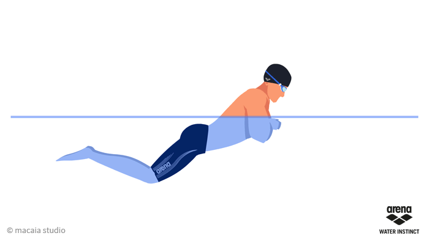

Estilo Braza o Pecho
La braza está experimentando cambios de estilo a un ritmo mucho más rápido que los demás. Hasta hace relativamente poco tiempo la braza se nadaba manteniendo el cuerpo más o menos plano (horizontal), con las caderas próxima a la superficie, sin embargo, en la actualidad los nadadores y expertos abogan por la eficacia de nadar este estilo de forma ondulante, con las caderas más bajas y los hombros fluctuando hacia arriba y hacia adelante, fuera del agua en la fase de respiración. Se trata de una posición más parecida a la posición adoptada en el estilo de mariposa y cuya ventaja consiste en disminuir la resistencia y en aumentar la propulsión.